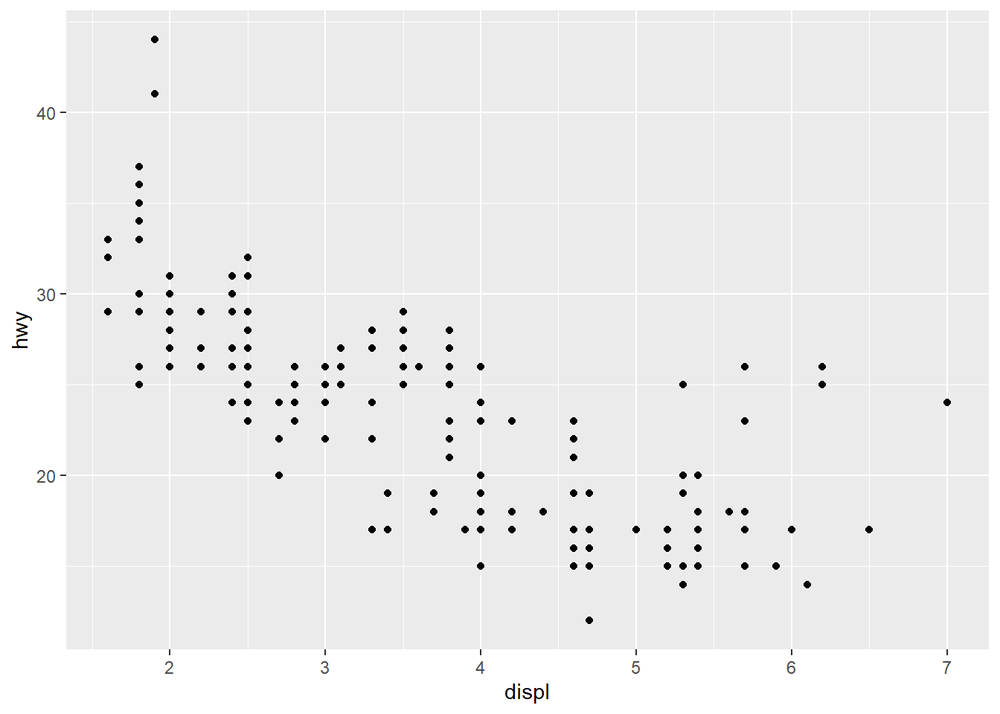
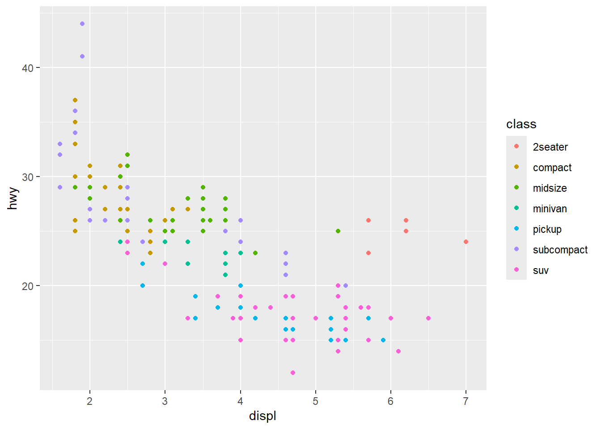
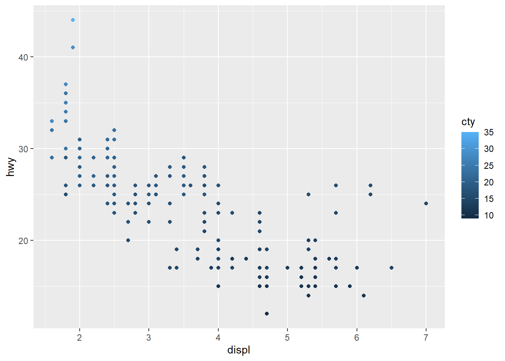
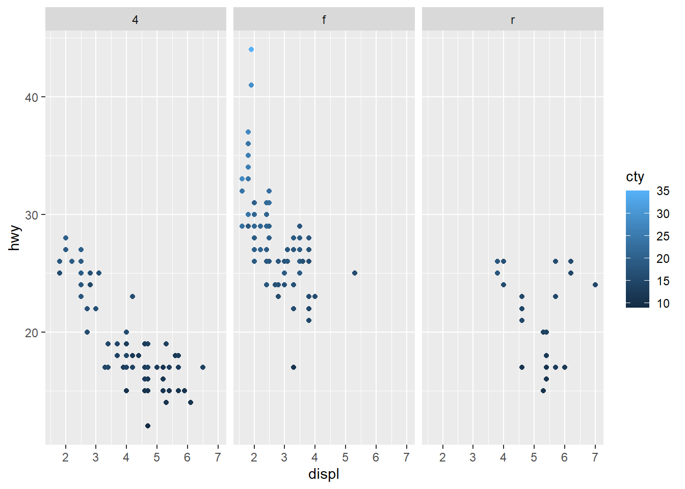
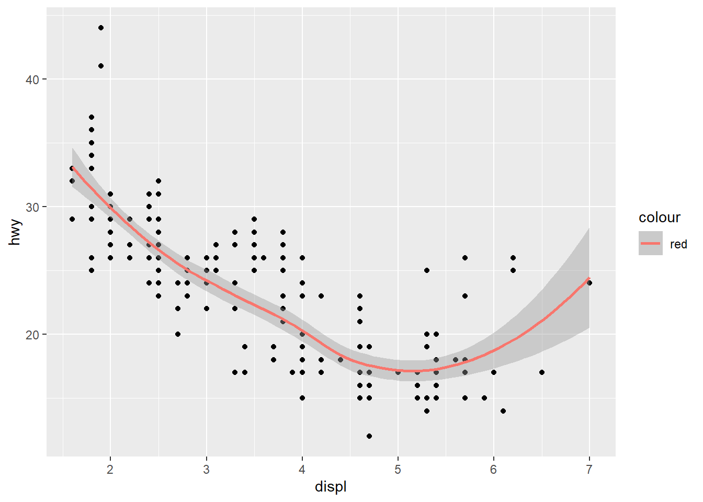
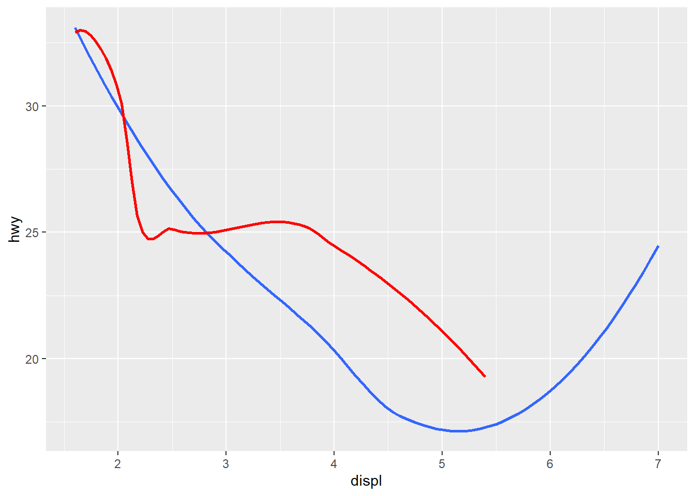

x <- 3 + sin(pi/2)Seminar 1
Overview
The goal for this seminar is to:
- ensure everyone has successfully installed R and RStudio;
- review some R basics;
- review
tidyversepackagesggplotdplyr
- create and publish a RMarkdown file;
- introduction to GitHub.
Installing R and RStudio
Follow instructions outlined at https://posit.co/download/rstudio-desktop/.
More advanced users may wish to investigate Positron, a new IDE for R from the creators of RStudio.
R basics
R is a programming language designed by Statisticians for statistical computation and data visualization. This makes it is distinct from Stata, SPSS, or SAS which are statistical softwares. Base R has a range of built in functions and tools used in Econometrics and Data Science. However, the real strength of R is the wider ecosystem of user-written packages. In this section we will review a few features of base R. In the next section, we will look at the tidyverse package, focusing on two of its subsidiary packages ggplot and dplyr.
Single values
We begin by assign an object x a value using the operator <-.
If you’re working in RStudio, x (=4) will appear as a stored value under the “Environment” tab. We can now use x in various computations; for example, solving for its square root.
sqrt(x)[1] 2Note, doing so does not change the stored value of x. We could define a new value y as its square root or replace x with its square root.
y <- sqrt(x)
x <- sqrt(x)The store value of x (and y) is now 2.
Values need not be numerical. They can also stored characters (often referred to as strings in other languages/software). For example,
z <- "United Kingdom"Sequences and Loops
Sequences are used extensively in programming. The most common place is in a loop that iterates through a sequence. We can define a sequence of numbers on in two ways. Consider the sequence \(1,\dots,10\).
u <- seq(1,10)
v <- 1:10Both give the same result, but the seq()-uence function is more flexible since it allows you adapt the interval. For example, we can we can make the intervals in the sequence \(0.5\).
U <- seq(1,10,0.5)An immediate application of a sequence is in a loop. Consider a loop over the sequence \(1(1)10\) that simply prints the number of the loop.
for(i in 1:10){
print(i)
}[1] 1
[1] 2
[1] 3
[1] 4
[1] 5
[1] 6
[1] 7
[1] 8
[1] 9
[1] 10Vectors and Matrices
When stored as values, sequences are essentially vectors. A more flexible function for creating a vector is the c()-ombine function. We can combine a set of objects, numeric or character.
w <- c(12,1,2,3)
W <- c("12","1","2","3")Vectors have two important features: length and type.
length(w)[1] 4typeof(w)[1] "double"typeof(W)[1] "character"You can even include a sequence within the combination.
w <- c(12,1:3)
w[1] 12 1 2 3When you print w (as above), it does so as a single row. However, if you use the t()-ranspose function, you will see that it displays as a row vector. Taking the transpose of the transpose shows you that the default is in fact to think about w as a column vector.
t(w) [,1] [,2] [,3] [,4]
[1,] 12 1 2 3t(t(w)) [,1]
[1,] 12
[2,] 1
[3,] 2
[4,] 3Here are a few fuctions that may be useful:
# minimum
min(w)[1] 1# maximum
max(w)[1] 12# sort
sort(w)[1] 1 2 3 12Note, sort(w) outputs a sorted version of w, but does not change the stored order of values in w. Multiplication/division by a scalar, is element by element.
w*2[1] 24 2 4 6w/2[1] 6.0 0.5 1.0 1.5We can combine two columns to form a matrix.
A <- cbind(w,seq(1,4))
A w
[1,] 12 1
[2,] 1 2
[3,] 2 3
[4,] 3 4B <- rbind(w,seq(1,4))
B [,1] [,2] [,3] [,4]
w 12 1 2 3
1 2 3 4Interestingly, this shows us that R does not fix the row-column dimension of a vector. Else, rbind() would give you a \(8\times 1\) vector. We can achieve this result by first fixing w as a \(4\times 1\) matrix.
C <- rbind(matrix(w),matrix(seq(1,4)))
C [,1]
[1,] 12
[2,] 1
[3,] 2
[4,] 3
[5,] 1
[6,] 2
[7,] 3
[8,] 4When working with vectors (and matrices) it is important to know how to index specific values. For example, if you want the third value of w you can say,
w[3][1] 2We can now consider a loop that prints the elements of w and W'. Here, I use thelength()` function to know the stopping point of the loop.
n <- length(w)
for(i in 1:n){
print(w[i])
print(W[i])
}[1] 12
[1] "12"
[1] 1
[1] "1"
[1] 2
[1] "2"
[1] 3
[1] "3"Suppose, we wanted to change change the type of W from character to numeric and w as a character.
for(i in 1:n){
print(as.character(w[i]))
print(as.numeric(W[i]))
}[1] "12"
[1] 12
[1] "1"
[1] 1
[1] "2"
[1] 2
[1] "3"
[1] 3In this instance, as.integer would work in place of as.numeric.
Lists
Lists can combine multiple types of data and/or values. The can become relatively complex collections, that employ a hierarchical structure to navigate. When you scrape data from a website it will usually be structured in a list.
site <- list("22 January 2025","United Kingdom",1:10,A)
typeof(site)[1] "list"length(site)[1] 4The above list has length 4 as it includes for items. The third item is a sequence from \(1(1)10\). We can index a particular element of the list by indexing.
site[3][[1]]
[1] 1 2 3 4 5 6 7 8 9 10typeof(site[[3]])[1] "integer"length(site[[3]])[1] 10Lists can be recursive
page <- list(list("22 January 2025","United Kingdom"),list("URL","download-date"))You can then extract a sublist,
page1 <- page[[1]]
element11 <- page1[[1]]‘Tidy’ data with tidyverse
tidyverse is a package designed for data scientists to create and analyse “tidy data” (see description from source). If you have analysed cross-sectional, longitudinal, or time-series data in Stata/R, then you are likely used to ‘tidy’ data. However, not all data is ‘tidy’. For example, when you scrape data from a website it has a complex structure with many levels (often using a list structure in R).
‘Tidy’ data essentially has a matrix structure (sometimes referred to as “rectangular” data) where a row represents a unique observation, a column a unique variable, and a cell a unique value.
To use this package we need to first install it and then load its library.
#install.package("tidyverse")
library(tidyverse)── Attaching core tidyverse packages ──────────────────────── tidyverse 2.0.0 ──
✔ dplyr 1.1.4 ✔ readr 2.1.5
✔ forcats 1.0.0 ✔ stringr 1.5.1
✔ ggplot2 3.5.1 ✔ tibble 3.2.1
✔ lubridate 1.9.3 ✔ tidyr 1.3.1
✔ purrr 1.0.2
── Conflicts ────────────────────────────────────────── tidyverse_conflicts() ──
✖ dplyr::filter() masks stats::filter()
✖ dplyr::lag() masks stats::lag()
ℹ Use the conflicted package (<http://conflicted.r-lib.org/>) to force all conflicts to become errorsWe will two packages within tidyverse: ggplot2 and dplyr. By loading tidyverse library, these subsidiary libraries will also be loaded. ### Graphing with ggplot2
ggplot2 is a very flexible graphing function. You start off by defining the data frame being mapped. Here we will use a small dataset that is included in the ggplot2 package.
car_frame <- mpgBrowsing this data in RStudio, you will see that it contains city and highway gas mileage (i.e. fuel economy) figures for various vehicles as well as the characteristics of these figures.
We begin by picking the data frame we wish to plot.
ggplot(data = car_frame)
This will plot a blank screen as we have not assigned any “geoms” to be graphed. We begin with a simple scatter plot of hwy (highway mileage) and displ (displacement). To do this, we must add a mapping which is paired to an aes()-thetic.
ggplot(data = car_frame) +
geom_point(mapping=aes(x=displ,y=hwy))
We can now modify the aesthetics of the graph. For example, by setting the colours of the points to vary with class of vehicle. You could also change the size and/or shape of the points by class: size=class or shape=class.
ggplot(data = car_frame) +
geom_point(mapping=aes(x=displ,y=hwy,color=class))
The color variable need not be categorical. For example, we could use a color gradient based on cty (city) mileage.
ggplot(data = car_frame) +
geom_point(mapping=aes(x=displ,y=hwy,color=cty))
We could make subplots by drive train class using facets.
ggplot(data = car_frame) +
geom_point(mapping=aes(x=displ,y=hwy,color=cty)) +
facet_wrap(~ drv,nrow=1)
We can also overlay a second geom. For example, a loess smoothing.
ggplot(data = car_frame) +
geom_point(mapping=aes(x=displ,y=hwy)) +
geom_smooth(mapping=aes(x=displ,y=hwy,color="red"))`geom_smooth()` using method = 'loess' and formula = 'y ~ x'
As the aesthetic is shared across both geoms, we can make it common.
ggplot(data = car_frame,mapping=aes(x=displ,y=hwy)) +
geom_point() +
geom_smooth(color="red")Alternatively, you can edit the data used for one geom.
ggplot(data = car_frame, mapping=aes(x=displ, y=hwy)) +
geom_smooth(
se = FALSE
) +
geom_smooth(
data = filter(car_frame, class == "subcompact"),
color="red",
se = FALSE
)`geom_smooth()` using method = 'loess' and formula = 'y ~ x'
`geom_smooth()` using method = 'loess' and formula = 'y ~ x'
Cleaning data with dplyr
The dplyr has a number of useful functions used to create and modify ‘tidy’ data. These include: mutate,select,filter,summarize, and arrange.
We begin by making a new dataset that includes only SUV vehicles. We can do this using the filter function.
suv_frame <- filter(car_frame,class=="suv")Note, the use of “==” to select a specific value. Next, we will select a subset of the variables.
suv_frame <- select(suv_frame,hwy,cty,displ,drv)Suppose we wanted to create new variables based on the existing set, we can do this using mutate. See also, transmute to keep only new variables.
suv_frame <- mutate(suv_frame,ratio = cty/hwy,hwy_d = hwy/displ,cty_d = cty/displ)summarize allows you to compute statistics of the existing variables. For example, the average city mileage.
summarize(suv_frame, avg_cty=mean(cty, na.rm = TRUE))# A tibble: 1 × 1
avg_cty
<dbl>
1 13.5But, suppose you wanted statistics by drive-train type. We can do this by first grouping the data frame.
suv_frame <- group_by(suv_frame, drv)
summarize(suv_frame, avg_cty=mean(cty_d, na.rm = TRUE))# A tibble: 2 × 2
drv avg_cty
<chr> <dbl>
1 4 3.63
2 r 2.24Notice, in each of these steps we transformed the same data frame. That is, the data argument remained the same in each step. We can code this more efficiently using a “pipe” operator.
drv_stats <- car_frame %>%
filter(class=="suv") %>%
mutate(ratio = cty/hwy,hwy_d = hwy/displ,cty_d = cty/displ) %>%
group_by(drv) %>%
summarize(
count=n(),
cty_d=mean(cty_d, na.rm = TRUE),
hwy_d=mean(hwy_d, na.rm = TRUE)
) RMarkdown
Markdown is a markup language. It includes relatively simple formatting that can incorporate more “creative” features through embedded HTML and CSS elements.
When programming in R using a .R-script file, by default, text is treated as code. If you want to leave a comment, you need to comment-out the line using #. Markdown files flip this around: by default, any text is treated as plain text. Executable code must be placed within a code block for it to be executed. These blocks are then executed as a sequence of “chunks”.
x <- c(4,5,7,9)Markdown files have a number of useful features; including,
- intuitive combination of code and text;
- straight forward embedding of graphs;
- publication in a number of formats (including, html, pdf, docx);
- inclusion of LaTeX.
Quarto
I would recommend that you investigate the cool things you can do with Quarto.
Git and GitHub
Here’s a great youtube on Git and GitHub. Git is a tool used to manage code, designed to deal with version control. GitHub is an online repository.
The basic steps, I used:
- Create a GitHub account.
- Install Git on your computer. This will include an app called Git Bash. You can also check out Git Desktop. I have found it easier to follow the steps below, which can be executed from Git Bash or the terminal within RStudio.
- I typically follow the following steps laid out on this blog under the heading “Type 2: Work on your project locally then create the repository on GitHub and push it to remote.”
When using GitHub for a solo project, these are the commands I typically execute in the RStudio terminal when I’ve completed working on a section:
git statusgit add .git commit -m "what I did"git push origin master
When working in a team, you want to ensure that you first “pull” any changes before editing files. This avoids clashes that can be a pain to disentangle. Before editing:
git fetch- this will fetch the data from the online repogit status- this will show whether you have any local changes
If you have any changes:
git add .git commit -m "what I did"
If you don’t have any changes:
git pull origin master
After edits are complete, check again for changes. In my experience, using GitHub does NOT AT ALL negate the need to communicate between team members. If you want to avoid issues with merging, you need be clear about who is working on what when.